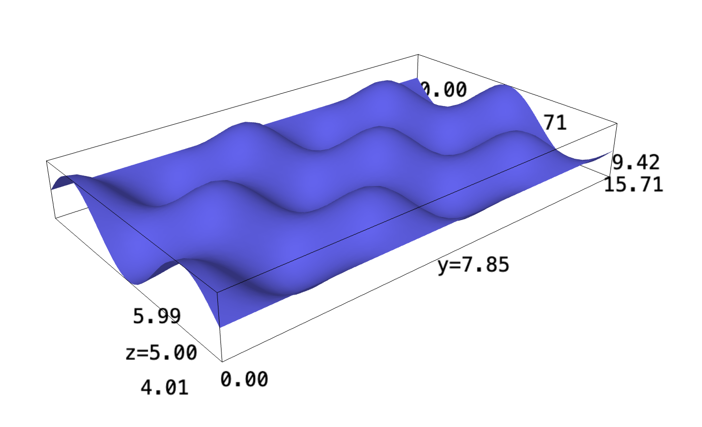
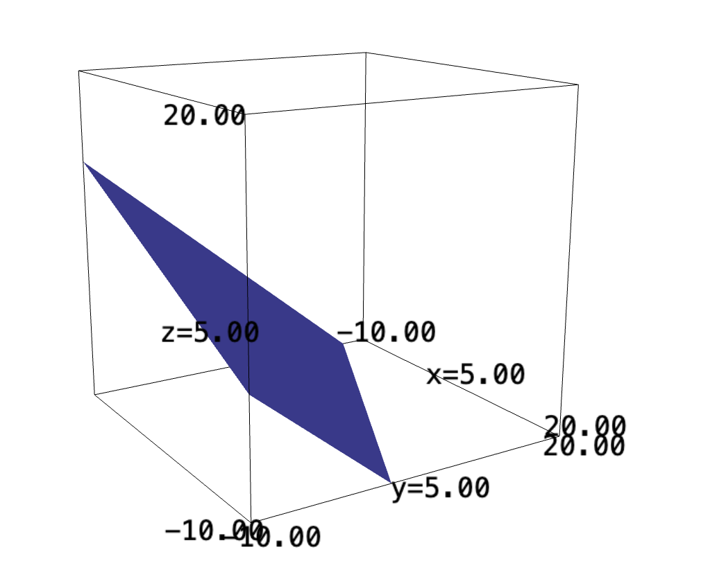

Backlinks
1 Actual double integrals
The intuition behind a double integral is not necessarily complex—it is simply summing up twice along each dimension.
Volume underneath the infinite egg carton, \(f(x,y) = sin(x)cos(y)+5\)
f(x,y) = sin(x)*cos(y)+5 plot3d(f, (x, 0, 3*pi), (y,0,5*pi))

1.1 Volume under egg carton, rectangular
In this sub-problem, we are bound by the origin and \(x=3\pi,y=5\pi\).
We take the expression, and sum it in both directions. We first collapse the \(y\) dimension by summing along it:
\begin{align} g(x,y) &= \int^{5\pi}_0 sin(x)cos(y)+5\ dy\\ &= \left (sin(x)sin(y) + 5y \right)|^{5\pi}_{0}\\ &= 25\pi \end{align}We then collapse along the \(x\) dimension by doing the same:
\begin{align} h(x) &= \int^{3\pi}_0 25\pi\ dx \\ &= 25\pi x | ^{3\pi}_0\\ &= 75{\pi}^2 \end{align}1.2 Volume under egg carton, polar
In this sub-problem, we are bound by the origin and \(\theta=\frac{\pi}{2}, r=5\pi\).
To do this, we will realize that a circular pair of coordinates can be represented by slices of areas with a custom upper-bound. We will first sum the area of an individual triangular shape, then integrate it by sweeping across.
An expression of a circle with radius \(5\pi\) is:
\begin{equation} x^2 + y^2 = (5 \pi)^2 \end{equation}Therefore, we can set the upper \(y\) bound as an expression:
\begin{equation} y = \sqrt{(5\pi)^2-x^2} \end{equation}Therefore, we will integrate the function to figure an expression for the total weight of each "rod":
\begin{align} &\int^{\sqrt{(5\pi)^2-x^2}}_0 (sin(x)cos(y)+5)\ dy\\ \Rightarrow&\ \left \left(sin(x)sin(y) + 5y \right)\right|^{\sqrt{(5\pi)^2-x^2}}_0\\ \Rightarrow&\ \left \left(sin(x)sin(\sqrt{(5\pi)^2-x^2}) + 5\sqrt{(5\pi)^2-x^2} \right) \end{align}We finally integrate along the \(x\) dimension: between \(0\) and \(5\pi\).
\begin{align} \int^{5\pi}_0 \left(sin(x)sin(\sqrt{(5\pi)^2-x^2}) + 5\sqrt{(5\pi)^2-x^2} \right) dx \end{align}Unfortunately, we will need now sage to actually compute this integral.
f(x) = (sin(x)*sin(sqrt((5*pi)^2-x^2)) + 5 * sqrt((5*pi)^2-x^2)) monte_carlo_integral(f, [0], [5*pi], 100000)
Therefore, the area under the shape is roughly \(971\) units.
We can check this with cylindrical coordinates. To do this, we first convert our rectangular expressions to cylindrical. Recall that, because of the shape of a unit circle and a cylinder:
\begin{equation} \begin{cases} x = r\ cos (\theta)\\ y = r\ sin (\theta)\\ z = z \end{cases} \end{equation}Therefore, we will perform the requisite substitutions:
\begin{align} z = f(r, \theta) &= sin(x)cos(y)+5\\ &= sin(r\ cos(\theta))cos(r\ sin(\theta))+5 \end{align}We will need to perform the integration twice again. Note, however, we are integrating over "rings" of the shape, whose deferential circumference would be \(r\ d\theta\). Therefore, we are to multiply the whole expression in \(r\).
f(r,t) = (sin(r*cos(t))*cos(r*sin(t))+5)*r monte_carlo_integral(f, [0,0], [5*pi, pi/2], 1000000)
We can see that the volume under the shape is roughly \(124.14\) units large.
2 Lagrange Multiplier, Again
Take the following bound expression:
\begin{equation} 2x+4y+5z = 20 \end{equation}what are the dimensions of the rectangle with one corner on the origin and the other on the above rectangle with these properties with the largest volume?
Let's plot the bound curve first:
x,y,z=var("x y z")
implicit_plot3d(2*x+4*y+5*z, (-10, 20), (-10, 20), (-10, 20))

We realize first that the \(x\), \(y\), \(z\) values are corresponding to both the coordinate of the topmost corner, as well as the lengths of the side. We will use a Lagrange multiplier method to optimize volume:
\begin{equation} V(x,y,z) = xyz \end{equation}Let's start by taking the gradient of the expression for both \(V\) and the bound expression \(g(x,y,z)=2x+4y+5z-20\):
\begin{equation} \Delta V = \begin{pmatrix} yz\\ xz\\ xy \end{pmatrix} \end{equation}and,
\begin{equation} \Delta g = \begin{pmatrix} 2\\ 4\\ 5 \end{pmatrix} \end{equation}Based on the expression for the Lagrange multiplier, we will derive the following expressions:
\begin{equation} \begin{cases} yz = 2\lambda \\ xz = 4\lambda \\ xy = 5\lambda \\ 0 = 2x+4y+5z -20 \end{cases} \end{equation}To solve, we will first divide the first two expressions by each other:
\begin{align} &\frac{y}{x} = \frac{1}{2} \\ \Rightarrow\ &y = \frac{x}{2} \end{align}We then substitute this into the third expression:
\begin{align} &xy = 5\lambda \\ \Rightarrow\ &x\frac{x}{2} = 5\lambda\\ \Rightarrow\ &\frac{x^2}{2} = 5\lambda\\ \Rightarrow\ &\frac{x^2}{10} = \lambda \end{align}Furthermore, we substitute the expression for \(\lambda\) into the second expression to figure \(z\) in terms of \(x\).
\begin{align} &xz = 4\lambda \\ \Rightarrow\ &xz = 4\frac{x^2}{10}\\ \Rightarrow\ &z = \frac{2x}{5} \end{align}We now solve by substituting all expression into the last one:
\begin{align} &0 = 2x+4y+5z-20\\ \Rightarrow\ &0 = 2x + 2x + 2x - 20 \\ \Rightarrow\ &0 = 6x - 20 \\ \Rightarrow\ &20 = 6x \\ \Rightarrow\ &x = \frac{10}{3} \end{align}Substituting the final expressions, therefore, the dimensions with the biggest volume would be:
\begin{equation} \begin{cases} x = \frac{10}{3}\\ y = \frac{5}{3} \\ z = \frac{4}{3} \end{cases} \end{equation}The max volume that results, therefore, is:
\begin{equation} V = \frac{200}{27} \approx 7.4 \end{equation}3 Parameterization 4D Surface
Consider the 4d surface:
\begin{equation} f(x,y,z) = -\sqrt{x^2+y^2} \end{equation}and the path:
\begin{equation} s(t) = \begin{pmatrix} a\ cos(t) \\ a\ sin(t) \end{pmatrix}, where\ t\, \in [0, 2\pi] \end{equation}what does the path look like?
We begin by figuring the parameterization of the function \(f\) along \(s\). \(s\) is expressions in terms of a parameterization:
\begin{equation} \begin{cases} x = a\ cos(t)\\ y = a\ sin(t) \end{cases} \end{equation}We first need to figure the rate of change of parameter w.r.t. time, that:
\begin{equation} \begin{align} \frac{\partial x}{\partial t} = -a\ sin(t)\\ \frac{\partial y}{\partial t} = -a\ cos(t) \end{align} \end{equation}And therefore, the rate of change is:
\begin{align} \frac{ds}{dt} &= \sqrt{(-a\ sin(t))^2+(-a\ cos(t))^2} \\ &= \sqrt{a^2(sin^2(t)+cos^2(t))} \\ &= \sqrt{a^2} \\ &= a \end{align}We then proceed to parameterize the actual function along these dimensions:
\begin{align} f(a\ cos(t),a\ sin(t),z) &= -\sqrt{(a\ cos(t))^2+(a\ sin(t))^2} \\ &= -\sqrt{a^2(cos^2(t)+sin^2(t))}\\ &= -a \end{align}Hence, taking the actual line integral:
\begin{align} &\int_0^{2 \pi} -a \frac{ds}{dt} dt\\ \Rightarrow & -\int_0^{2 \pi} a^2 dt\\ \Rightarrow & -\left \frac{a^3}{3}\right|_0^{2 \pi} \\ \Rightarrow & -\left \frac{8\pi^3}{3}\right \end{align}The integral along that curve would be \(\frac{-8\pi^3}{3}\).